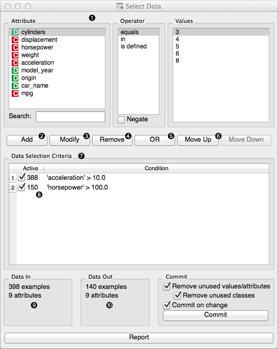
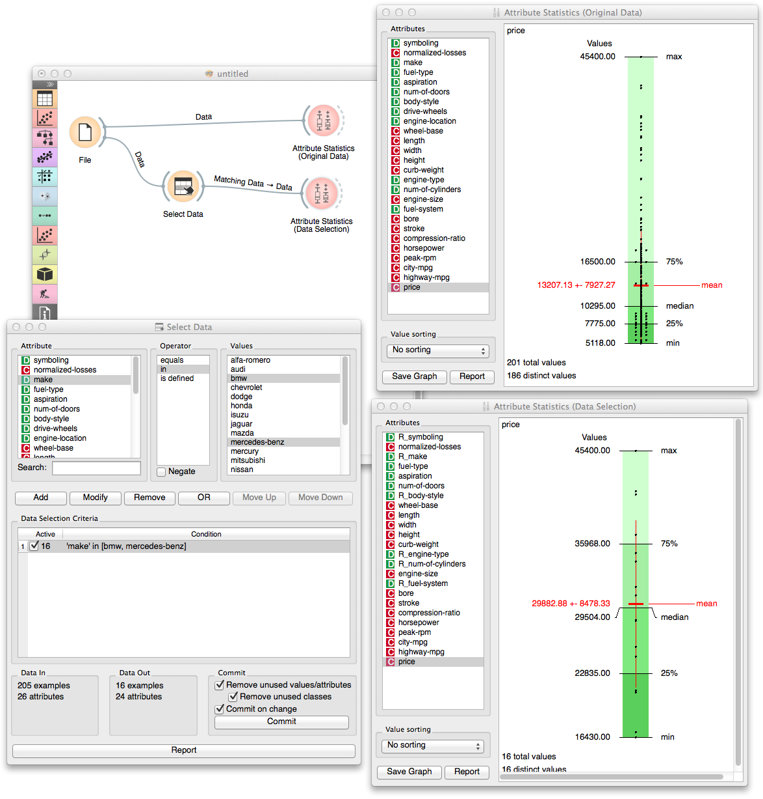

This is documentation for Orange 2.7. For the latest documentation, see Orange 3.
Select Data¶

Selects data instances based on conditions over data features.
Signals¶
- Inputs:
- Data
Attribute-valued data set.
- Outputs:
- Matching Data
Data instances that match the conditions.
- Non-Matching Data
Data instances that do not match the conditions.
Description¶
This widget allows the user to select a subset of the data from the input data set based on the condition defined over a set of data’s attributes. Data instances that match the selection rule are placed on the output Matching Data channel.
Criteria for data selection are presented in disjunctive normal form, as collection of conjuncted terms (AND operator) with optional disjunction (OR operator). In other words, if condition does not include a disjunction (OR line in the condition) than selected items are those matching all terms in the condition.
Condition terms are defined through selecting of an attribute, selecting an operator from the list of operators that apply to attribute’s type, and, if needed, defining the value to be used in condition term. Operators are different for discrete, continuous and string attributes.
- Choose an attribute, operator and related value to construct the condition.
- Add a new condition to the list of conditions. The new condition will appear in the Data Selection Criteria box.
- Modify a selected condition from the list.
- Remove the selected condition from the list.
- Insert an OR operator to the list of conditions.
- Rearrange the order of conditions in the list. If there is not OR operator, the order would not have any effect on data selection.
- List with conditions that are currently applied to the data.
- Number of data items matching the condition.
- Information on the input data set.
- Information on the data set of instances that match the condition.
Notice that any change in composition of the condition will trigger updates in information pane that displays the number of data instances being selected (Data Out). Number of instances that match specific condition terms are also displayed at the start of the condition term line.
Data set composed of instances that match the defined condition is placed on the output channel. If Commit on change is selected, than the output is updated on any change in the composition of the condition or any of its terms.
Example¶
In a toy example below we used the car data from imports-85 data set and compared the prices of all the cars in the data set to those of BMW and Marcedes-Benz.
